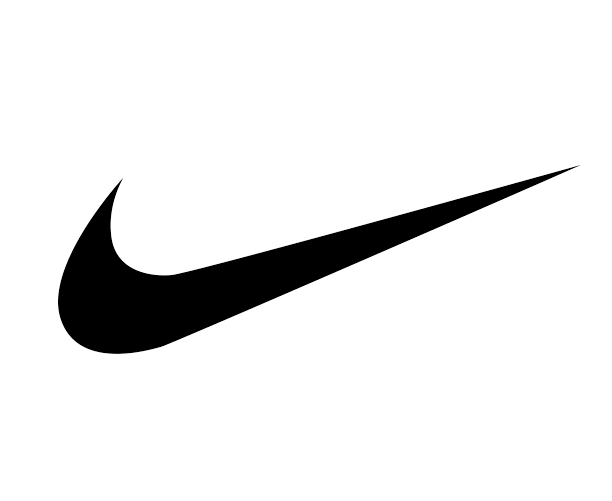
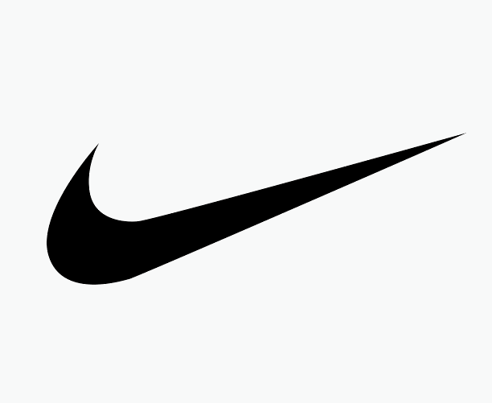

나이키 Nike
나이키는 스포츠용품보다 자기극복의 서사를 더 강하게 판매하는 브랜드다. 신발과 의류는 제품이지만, 소비자가 실제로 구매하는 것은 기록을 갱신하고 자신을 증명하고 싶은 감정이다. 나이키의 커뮤니티와 디지털 서비스는 이 감정을 지속시키는 장치로 작동한다.
최종 업데이트

나이키는 어떤 브랜드인가
나이키는 스포츠용품보다 자기극복의 서사를 더 강하게 판매하는 브랜드다. 신발과 의류는 제품이지만, 소비자가 실제로 구매하는 것은 기록을 갱신하고 자신을 증명하고 싶은 감정이다.
나이키의 커뮤니티와 디지털 서비스는 이 감정을 지속시키는 장치로 작동한다.
나이키는 어떻게 봐야 할까
나이키는 스포츠용품보다 자기극복의 서사를 더 강하게 판매하는 브랜드다. 신발과 의류는 제품이지만, 소비자가 실제로 구매하는 것은 기록을 갱신하고 자신을 증명하고 싶은 감정이다.
나이키의 커뮤니티와 디지털 서비스는 이 감정을 지속시키는 장치로 작동한다. 나이키의 헤리티지는 승리의 이미지를 현대적 소비문화로 번역하는 데 있다.
브랜드명과 상징은 고대적 승리의 감각을 빌려오지만, 그것을 운동장 밖의 일상과 팬덤, 자기관리 문화로 확장한다.
나이키는 어떻게 시작되고 성장했나
스포츠의류 브랜드인 나이키는 1962년 필 나이트와 빌 바우어만에 의해 시작되었다. 나이키는 혁신적 제품개발과 선수들과의 강력한 관계 구축을 통해 현재 스포츠 브랜드내 가장 높은 브랜드 가치(26조 달러)를 기록하며 정상의 자리에 있다.
나이키의 브랜드 아이덴티티는 무엇인가
나이키는 제품에 혁신을 더한다. 그리고 사용자는 제품을 통해 용감하고 거침없이 도전한다.
열정을 바탕으로 도전하는 나이키의 모습은 브랜딩의 전 영역에서 나타나고 있다.
나이키의 대표 제품과 서비스는 무엇인가
디지털 기술과 러닝(Running) 문화를 통해 나이키는 거대한 커뮤니티를 만들 수 있었다. 나이키는 기술과 문화로 사람들을 연결하고, 그들이 경쟁하고 즐길 수 있는 환경을 디자인하고 있다.
나이키의 상품들은 크게 성별, 연령, 그리고 운동종목에 따라 카테고리가 구분된다. 지속적인 제품 개발을 통해 기능적 가치는 물론, 선수들의 활약을 통해 승리의 가치도 함께 전달하고 있다.
풋웨어, 스포츠 장비, 옷
나이키는 지금 어떤 상태인가
나이키 연혁 — 주요 사건은 언제였나
나이키 로고는 어떻게 변해왔나
대표 로고대표 브랜드 마크
BI/CI 아카이브 3보관 이미지 3
BI/CI 아카이브 4보관 이미지 4 BI/CI 아카이브 5보관 이미지 5
BI/CI 아카이브 5보관 이미지 5자주 묻는 질문
나이키는 어떤 산업의 브랜드인가요?
나이키는 스포츠·아웃도어 분야의 브랜드입니다.
나이키의 브랜드 아이덴티티는 무엇인가요?
나이키는 제품에 혁신을 더한다.
나이키의 대표 제품은 무엇인가요?
디지털 기술과 러닝(Running) 문화를 통해 나이키는 거대한 커뮤니티를 만들 수 있었다.
나이키는 현재 어떤 상태인가요?
국가: 미국; 본사: 비버턴; 산업: 의류산업
출처와 검증
브랜드명은 한글과 원어를 함께 표기하되 데이터에 없는 표기는 만들지 않습니다. 기원 국가·설립연도는 검수된 정의문에서 확인된 값을 우선하고, 없을 때만 공식 웹사이트 URL이 일치하는 위키데이터 개체의 값을 씁니다.